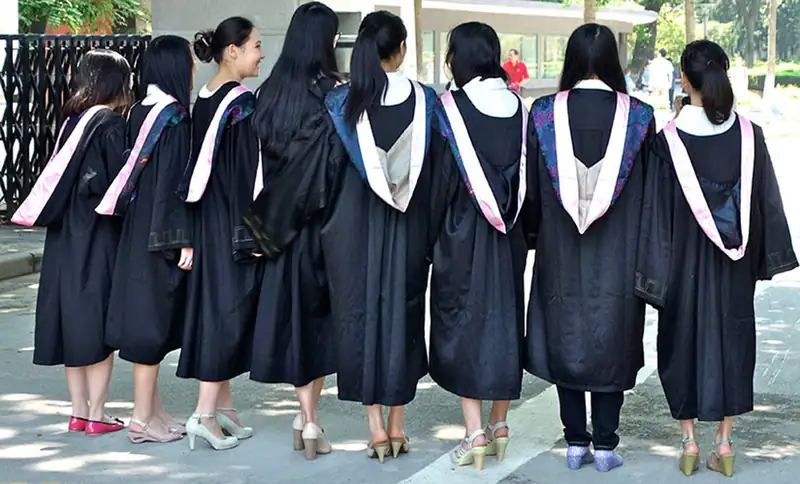
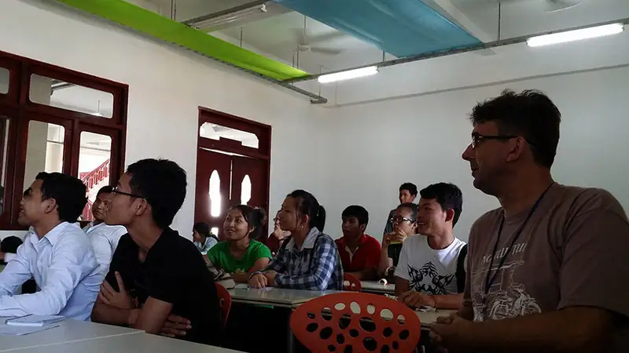
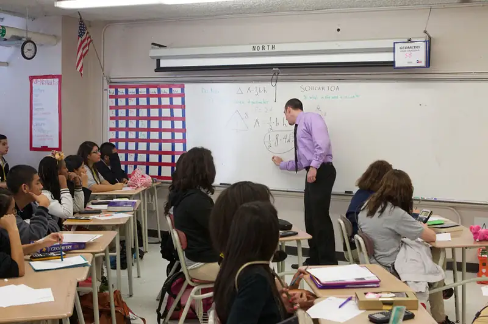
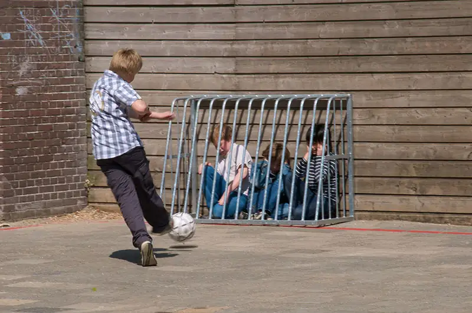
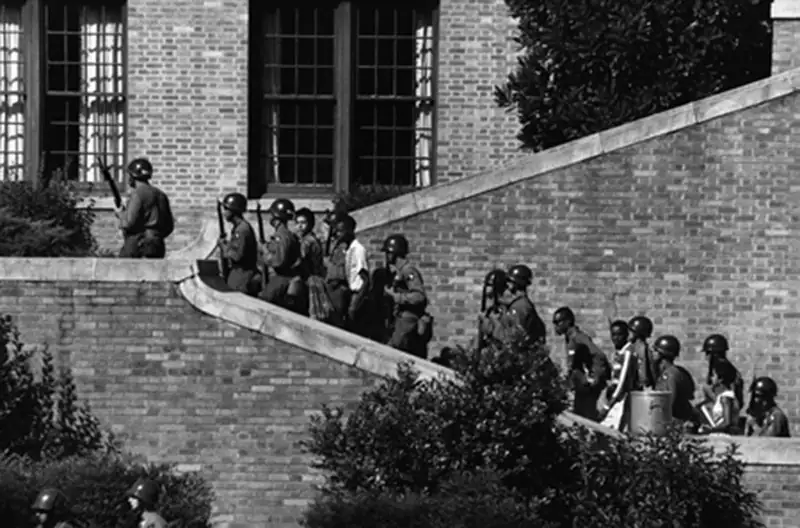

Chapter 16: Education¶
Introduction¶

“What the educator does in teaching is to make it possible for the students to become themselves” (Paulo Freire, Pedagogy of the Oppressed). David Simon, in his book Social Problems and the Sociological Imagination: A Paradigm for Analysis (1995), points to the notion that social problems are, in essence, contradictions—that is, statements, ideas, or features of a situation that are opposed to one another. Consider then, that one of the greatest expectations in U.S. society is that to attain any form of success in life, a person needs an education. In fact, a college degree is rapidly becoming an expectation at many levels of success, not merely an enhancement to our occupational choices. And, as you might expect, the number of people graduating from college in the United States continues to rise dramatically.
The contradiction, however, lies in the fact that the more impactful a college degree has become, the harder it has become to achieve it. The cost of getting a college degree has risen sharply since the mid-1980s, while many important forms of government support have barely increased.
The net result is that those who do graduate from college are likely to begin a career in debt. As of 2009, a typical student’s loans amounted to around $23,000. Ten years later, the average amount of debt for students who took loans grew to over $30,000. The overall national student loan debt topped $1.6 trillion in 2020, according to the Federal Reserve. These rising costs and risky debt burdens have led to a number of diverse proposals for solutions. Some call for cancelling current college debt and making more colleges free to qualifying students. Others advocate for more focused and efficient education in order to achieve needed career requirements more quickly. Employers, seeking both to widen their applicant pool and increase equity among their workforce, have increasingly sought ways to eliminate unnecessary degree requirements: If a person has the skills and knowledge to do the job, they have more access to it (Kerr 2020).
![A graph shows the unemployment rate by level of educational attainment. Among people age 25 and older with a bachelor's degree or higher, the unemployment rate was 2.0 percent in January 2020, down from 2.4 percent a year earlier. The national unemployment rate was 3.6 percent in January 2020, down from 4.0 percent in January 2019. (The national unemployment rate is for people age 16 and older.) The bottom data line of the graph indicates bachelors degree holders, who are regularly several percentage points lower in unemployment than the next level of people measured, which are people with some college education. Those without a high school degree have the highest consistent unemployment rate, sometimes more than 10 percent higher than those with bachelors degrees.](img/cnx-soc2e-graph-16-01-002.webp)
Is a college degree still worth it? Lifetime earnings among those with a college degree are, on average, still much higher than for those without. A 2019 Federal Reserve report indicated that, on average, college graduates earn $30,000 per year more than non-college graduates. Also, that wage gap has nearly doubled in the past 40 years (Abel 2019).
Is the wage advantage enough to overcome the potential debt? And what’s behind those averages? Remember, since the $30,000 is an average, it also confirms what we see from other data: That certain people and certain college majors earn far more than others. As a result, earning a college degree in a field that has a smaller wage advantage over non-college graduates might not seem “worth it.”
But is college worth more than money?
A student earning Associate’s and Bachelor’s degrees generally will often take a wide array of courses, including many outside of their major. The student is exposed to a fairly broad range of topics, from mathematics and the physical sciences to history and literature, the social sciences, and music and art through introductory and survey-styled courses. It is in this period that the student’s world view is, it is hoped, expanded. Then, when they begin the process of specialization, it is with a much broader perspective than might be otherwise. This additional “cultural capital” can further enrich the life of the student, enhance their ability to work with experienced professionals, and build wisdom upon knowledge. Over two thousand years ago, Socrates said, “The unexamined life is not worth living.” The real value of an education, then, is to enhance our skill at self-examination. Education, its impact, and its costs are important not just to sociologists, but to policymakers, employers, and of course to parents.
16.1 Education around the World¶
Learning Objectives
By the end of this section, you should be able to:
- Identify differences in educational resources around the world
- Describe the concept of universal access to education

Education is a social institution through which members of a society are taught basic academic knowledge, learning skills, and cultural norms. Every nation in the world is equipped with some form of education system, though those systems vary greatly. The major factors that affect education systems are the resources and money that are utilized to support those systems in different nations. As you might expect, a country’s wealth has much to do with the amount of money spent on education. Countries that do not have such basic amenities as running water are unable to support robust education systems or, in many cases, any formal schooling at all. The result of this worldwide educational inequality is a social concern for many countries, including the United States.
International differences in education systems are not solely a financial issue. The value placed on education, the amount of time devoted to it, and the distribution of education within a country also play a role in those differences. For example, students in South Korea spend 220 days a year in school, compared to the 180 days a year of their United States counterparts (Pellissier 2010).
Then there is the issue of educational distribution and changes within a nation. The Program for International Student Assessment (PISA) is administered to samples of fifteen-year-old students worldwide. In 2010, the results showed that students in the United States had fallen from fifteenth to twenty-fifth in the rankings for science and math (National Public Radio 2010). The same program showed that by 2018, U.S. student achievement had remained on the same level for mathematics and science, but had shown improvements in reading. In 2018, about 4,000 students from about 200 high schools in the United States took the PISA test (OECD 2019).
Analysts determined that the nations and city-states at the top of the rankings had several things in common. For one, they had well-established standards for education with clear goals for all students. They also recruited teachers from the top 5 to 10 percent of university graduates each year, which is not the case for most countries (National Public Radio 2010).
Finally, there is the issue of social factors. One analyst from the Organization for Economic Cooperation and Development, the organization that created the PISA test, attributed 20 percent of performance differences and the United States’ low rankings to differences in social background. Researchers noted that educational resources, including money and quality teachers, are not distributed equitably in the United States. In the top-ranking countries, limited access to resources did not necessarily predict low performance. Analysts also noted what they described as “resilient students,” or those students who achieve at a higher level than one might expect given their social background. In Shanghai and Singapore, the proportion of resilient students is about 70 percent. In the United States, it is below 30 percent. These insights suggest that the United States’ educational system may be on a descending path that could detrimentally affect the country’s economy and its social landscape (National Public Radio 2010).
Big Picture: Education in Finland
With public education in the United States under such intense criticism, why is it that Singapore, South Korea, and especially Finland (which is culturally most similar to us), have such excellent public education? Over the course of thirty years, the country has pulled itself from among the lowest rankings by the Organization of Economic Cooperation (OEDC) to first in 2012, and remains, as of 2014, in the top five. Contrary to the rigid curriculum and long hours demanded of students in South Korea and Singapore, Finnish education often seems paradoxical to outside observers because it appears to break a lot of the rules we take for granted. It is common for children to enter school at seven years old, and children will have more recess and less hours in school than U.S. children—approximately 300 less hours. Their homework load is light when compared to all other industrialized nations (nearly 300 fewer hours per year in elementary school). There are no gifted programs, almost no private schools, and no high-stakes national standardized tests (Laukkanen 2008; LynNell Hancock 2011).
Prioritization is different than in the United States. There is an emphasis on allocating resources for those who need them most, high standards, support for special needs students, qualified teachers taken from the top 10 percent of the nation's graduates and who must earn a Master's degree, evaluation of education, balancing decentralization and centralization.
"We used to have a system which was really unequal," stated the Finnish Education Chief in an interview. "My parents never had a real possibility to study and have a higher education. We decided in the 1960s that we would provide a free quality education to all. Even universities are free of charge. Equal means that we support everyone and we’re not going to waste anyone’s skills." As for teachers, "We don’t test our teachers or ask them to prove their knowledge. But it’s true that we do invest in a lot of additional teacher training even after they become teachers" (Gross-Loh 2014).
Yet over the past decade Finland has consistently performed among the top nations on the PISA. Finland’s school children didn’t always excel. Finland built its excellent, efficient, and equitable educational system in a few decades from scratch, and the concept guiding almost every educational reform has been equity. The Finnish paradox is that by focusing on the bigger picture for all, Finland has succeeded at fostering the individual potential of most every child.
“We created a school system based on equality to make sure we can develop everyone’s potential. Now we can see how well it’s been working. Last year the OECD tested adults from twenty-four countries measuring the skill levels of adults aged sixteen to sixty-five on a survey called the PIAAC (Programme for International Assessment of Adult Competencies), which tests skills in literacy, numeracy, and problem solving in technology-rich environments. Finland scored at or near the top on all measures.”
Formal and Informal Education¶
As already mentioned, education is not solely concerned with the basic academic concepts that a student learns in the classroom. Societies also educate their children, outside of the school system, in matters of everyday practical living. These two types of learning are referred to as formal education and informal education.
Formal education describes the learning of academic facts and concepts through a formal curriculum. Arising from the tutelage of ancient Greek thinkers, centuries of scholars have examined topics through formalized methods of learning. Education in earlier times was only available to the higher classes; they had the means for access to scholarly materials, plus the luxury of leisure time that could be used for learning. The Industrial Revolution and its accompanying social changes made education more accessible to the general population. Many families in the emerging middle class found new opportunities for schooling.
The modern U.S. educational system is the result of this progression. Today, basic education is considered a right and responsibility for all citizens. Expectations of this system focus on formal education, with curricula and testing designed to ensure that students learn the facts and concepts that society believes are basic knowledge.
In contrast, informal education describes learning about cultural values, norms, and expected behaviors by participating in a society. This type of learning occurs both through the formal education system and at home. Our earliest learning experiences generally happen via parents, relatives, and others in our community. Through informal education, we learn important life skills that help us get through the day and interact with each other, including how to dress for different occasions, how to perform regular tasks such as shopping for and preparing food, and how to keep our bodies clean. Many professional tasks and local customs are learned informally, as well.
Cultural transmission refers to the way people come to learn the values, beliefs, and social norms of their culture. Both informal and formal education include cultural transmission. For example, a student will learn about cultural aspects of modern history in a U.S. History classroom. In that same classroom, the student might learn the cultural norm for asking a classmate out on a date through passing notes and whispered conversations.
Access to Education¶
Another global concern in education is universal access. This term refers to people’s equal ability to participate in an education system. On a world level, access might be more difficult for certain groups based on class or gender (as was the case in the United States earlier in the nation’s history, a dynamic we still struggle to overcome). The modern idea of universal access arose in the United States as a concern for people with disabilities. In the United States, one way in which universal education is supported is through federal and state governments covering the cost of free public education. Of course, the way this plays out in terms of school budgets and taxes makes this an often-contested topic on the national, state, and community levels.
Table 16.1 How does state spending affect educational opportunities? (EducationData.org 2018)
| Rank | State | Education Spending Per Student |
|---|---|---|
| 1 | New York | $24,040 |
| 2 | District of Columbia | $22,759 |
| 3 | Connecticut | $20,635 |
| 4 | New Jersey | $20,021 |
| 5 | Vermont | $19,340 |
| 6 | Alaska | $17,726 |
| 7 | Massachusetts | $17,058 |
| 8 | New Hampshire | $16,893 |
| 9 | Pennsylvania | $16,395 |
| 10 | Wyoming | $16,224 |
| 11 | Rhode Island | $16,121 |
| 12 | Illinois | $15,741 |
| 13 | Delaware | $15,639 |
| 14 | Hawaii | $15,242 |
| 15 | Maryland | $14,762 |
| 16 | Maine | $14,145 |
| 17 | North Dakota | $13,758 |
| 18 | Ohio | $13,027 |
| 19 | Washington | $12,995 |
| 20 | Minnesota | $12,975 |
| 21 | California | $12,498 |
| 22 | Nebraska | $12,491 |
| 23 | Michigan | $12,345 |
| 24 | Wisconsin | $12,285 |
| 25 | Virginia | $12,216 |
| 26 | Oregon | $11,920 |
| 27 | Iowa | $11,732 |
| 28 | Montana | $11,680 |
| 29 | Kansas | $11,653 |
| 30 | Louisiana | $11,452 |
| 31 | West Virginia | $11,334 |
| 32 | Kentucky | $11,110 |
| 33 | South Carolina | $10,856 |
| 34 | Missouri | $10,810 |
| 34 | Georgia | $10,810 |
| 36 | Indiana | $10,262 |
| 37 | Colorado | $10,202 |
| 38 | Arkansas | $10,139 |
| 39 | South Dakota | $10,073 |
| 40 | Alabama | $9,696 |
| 41 | Texas | $9,606 |
| 42 | New Mexico | $9,582 |
| 43 | Tennessee | $9,544 |
| 44 | Nevada | $9,417 |
| 45 | North Carolina | $9,377 |
| 46 | Florida | $9,346 |
| 47 | Mississippi | $8,935 |
| 48 | Oklahoma | $8,239 |
| 49 | Arizona | $8,239 |
| 50 | Idaho | $7,771 |
| 51 | Utah | $7,628 |
A precedent for universal access to education in the United States was set with the 1972 U.S. District Court for the District of Columbia’s decision in Mills v. Board of Education of the District of Columbia. This case was brought on the behalf of seven school-age children with special needs who argued that the school board was denying their access to free public education. The school board maintained that the children’s “exceptional” needs, which included intellectual disabilities, precluded their right to be educated for free in a public school setting. The board argued that the cost of educating these children would be too expensive and that the children would therefore have to remain at home without access to education.
This case was resolved in a hearing without any trial. The judge, Joseph Cornelius Waddy, upheld the students’ right to education, finding that they were to be given either public education services or private education paid for by the Washington, D.C., board of education. He noted that
Constitutional rights must be afforded citizens despite the greater expense involved … the District of Columbia’s interest in educating the excluded children clearly must outweigh its interest in preserving its financial resources. … The inadequacies of the District of Columbia Public School System whether occasioned by insufficient funding or administrative inefficiency, certainly cannot be permitted to bear more heavily on the “exceptional” or handicapped child than on the normal child (Mills v. Board of Education 1972).
Today, the optimal way to include people with disabilities students in standard classrooms is still being researched and debated. “Inclusion” is a method that involves complete immersion in a standard classroom, whereas “mainstreaming” balances time in a special-needs classroom with standard classroom participation. There continues to be social debate surrounding how to implement the ideal of universal access to education.
16.2 Theoretical Perspectives on Education¶
Learning Objectives
By the end of this section, you should be able to:
- Define manifest and latent functions of education
- Explain and discuss how functionalism, conflict theory, feminism, and interactionism view issues of education
While it is clear that education plays an integral role in individuals’ lives as well as society as a whole, sociologists view that role from many diverse points of view. Functionalists believe that education equips people to perform different functional roles in society. Conflict theorists view education as a means of widening the gap in social inequality. Feminist theorists point to evidence that sexism in education continues to prevent women from achieving a full measure of social equality. Symbolic interactionists study the dynamics of the classroom, the interactions between students and teachers, and how those affect everyday life. In this section, you will learn about each of these perspectives.
Functionalism¶
Functionalists view education as one of the more important social institutions in a society. They contend that education contributes two kinds of functions: manifest (or primary) functions, which are the intended and visible functions of education; and latent (or secondary) functions, which are the hidden and unintended functions.
Manifest Functions¶
There are several major manifest functions associated with education. The first is socialization. Beginning in preschool and kindergarten, students are taught to practice various societal roles. The French sociologist Émile Durkheim (1858–1917), who established the academic discipline of sociology, characterized schools as “socialization agencies that teach children how to get along with others and prepare them for adult economic roles” (Durkheim 1898). Indeed, it seems that schools have taken on this responsibility in full.
This socialization also involves learning the rules and norms of the society as a whole. In the early days of compulsory education, students learned the dominant culture. Today, since the culture of the United States is increasingly diverse, students may learn a variety of cultural norms, not only that of the dominant culture.
School systems in the United States also transmit the core values of the nation through manifest functions like social control. One of the roles of schools is to teach students conformity to law and respect for authority. Obviously, such respect, given to teachers and administrators, will help a student navigate the school environment. This function also prepares students to enter the workplace and the world at large, where they will continue to be subject to people who have authority over them. Fulfillment of this function rests primarily with classroom teachers and instructors who are with students all day.

Education also provides one of the major methods used by people for upward social mobility. This function is referred to as social placement. College and graduate schools are viewed as vehicles for moving students closer to the careers that will give them the financial freedom and security they seek. As a result, college students are often more motivated to study areas that they believe will be advantageous on the social ladder. A student might value business courses over a class in Victorian poetry because she sees business class as a stronger vehicle for financial success.
Latent Functions¶
Education also fulfills latent functions. As you well know, much goes on in a school that has little to do with formal education. For example, you might notice an attractive fellow student when he gives a particularly interesting answer in class—catching up with him and making a date speaks to the latent function of courtship fulfilled by exposure to a peer group in the educational setting.
The educational setting introduces students to social networks that might last for years and can help people find jobs after their schooling is complete. Of course, with social media such as Facebook and LinkedIn, these networks are easier than ever to maintain. Another latent function is the ability to work with others in small groups, a skill that is transferable to a workplace and that might not be learned in a homeschool setting.
The educational system, especially as experienced on university campuses, has traditionally provided a place for students to learn about various social issues. There is ample opportunity for social and political advocacy, as well as the ability to develop tolerance to the many views represented on campus. In 2011, the Occupy Wall Street movement swept across college campuses all over the United States, leading to demonstrations in which diverse groups of students were unified with the purpose of changing the political climate of the country.
Table 16.2 Manifest and Latent Functions of Education According to functionalist theory, education contributes both manifest and latent functions.
| Manifest Functions: Openly stated functions with intended goals | Latent Functions: Hidden, unstated functions with sometimes unintended consequences |
|---|---|
| Socialization | Courtship |
| Transmission of culture | Social networks |
| Social control | Group work |
| Social placement | Creation of generation gap |
| Cultural innovation | Political and social integration |
Functionalists recognize other ways that schools educate and enculturate students. One of the most important U.S. values students in the United States learn is that of individualism—the valuing of the individual over the value of groups or society as a whole. In countries such as Japan and China, where the good of the group is valued over the rights of the individual, students do not learn as they do in the United States that the highest rewards go to the “best” individual in academics as well as athletics. One of the roles of schools in the United States is fostering self-esteem; conversely, schools in Japan focus on fostering social esteem—the honoring of the group over the individual.
In the United States, schools also fill the role of preparing students for competition in life. Obviously, athletics foster a competitive nature, but even in the classroom students compete against one another academically. Schools also fill the role of teaching patriotism. Students recite the Pledge of Allegiance each morning and take history classes where they learn about national heroes and the nation’s past.
Another role of schools, according to functionalist theory, is that of sorting, or classifying students based on academic merit or potential. The most capable students are identified early in schools through testing and classroom achievements. Such students are placed in accelerated programs in anticipation of successful college attendance.
Functionalists also contend that school, particularly in recent years, is taking over some of the functions that were traditionally undertaken by family. Society relies on schools to teach about human sexuality as well as basic skills such as budgeting and job applications—topics that at one time were addressed by the family.
Conflict Theory¶
Conflict theorists do not believe that public schools reduce social inequality. Rather, they believe that the educational system reinforces and perpetuates social inequalities that arise from differences in class, gender, race, and ethnicity. Where functionalists see education as serving a beneficial role, conflict theorists view it more negatively. To them, educational systems preserve the status quo and push people of lower status into obedience.

The fulfillment of one’s education is closely linked to social class. Students of low socioeconomic status are generally not afforded the same opportunities as students of higher status, no matter how great their academic ability or desire to learn. Picture a student from a working-class home who wants to do well in school. On a Monday, he’s assigned a paper that’s due Friday. Monday evening, he has to babysit his younger sister while his divorced mother works. Tuesday and Wednesday, he works stocking shelves after school until 10:00 p.m. By Thursday, the only day he might have available to work on that assignment, he’s so exhausted he can’t bring himself to start the paper. His mother, though she’d like to help him, is so tired herself that she isn’t able to give him the encouragement or support he needs. And since English is her second language, she has difficulty with some of his educational materials. They also lack a computer and printer at home, which most of his classmates have, so they have to rely on the public library or school system for access to technology. As this story shows, many students from working-class families have to contend with helping out at home, contributing financially to the family, poor study environments and a lack of support from their families. This is a difficult match with education systems that adhere to a traditional curriculum that is more easily understood and completed by students of higher social classes.
Such a situation leads to social class reproduction, extensively studied by French sociologist Pierre Bourdieu. He researched how cultural capital, or cultural knowledge that serves (metaphorically) as currency that helps us navigate a culture, alters the experiences and opportunities available to French students from different social classes. Members of the upper and middle classes have more cultural capital than do families of lower-class status. As a result, the educational system maintains a cycle in which the dominant culture’s values are rewarded. Instruction and tests cater to the dominant culture and leave others struggling to identify with values and competencies outside their social class. For example, there has been a great deal of discussion over what standardized tests such as the SAT truly measure. Many argue that the tests group students by cultural ability rather than by natural intelligence.
The cycle of rewarding those who possess cultural capital is found in formal educational curricula as well as in the hidden curriculum, which refers to the type of nonacademic knowledge that students learn through informal learning and cultural transmission. This hidden curriculum reinforces the positions of those with higher cultural capital and serves to bestow status unequally.
Conflict theorists point to tracking, a formalized sorting system that places students on “tracks” (advanced versus low achievers) that perpetuate inequalities. While educators may believe that students do better in tracked classes because they are with students of similar ability and may have access to more individual attention from teachers, conflict theorists feel that tracking leads to self-fulfilling prophecies in which students live up (or down) to teacher and societal expectations (Education Week 2004).
To conflict theorists, schools play the role of training working-class students to accept and retain their position as lower members of society. They argue that this role is fulfilled through the disparity of resources available to students in richer and poorer neighborhoods as well as through testing (Lauen and Tyson 2008).
IQ tests have been attacked for being biased—for testing cultural knowledge rather than actual intelligence. For example, a test item may ask students what instruments belong in an orchestra. To correctly answer this question requires certain cultural knowledge—knowledge most often held by more affluent people who typically have more exposure to orchestral music. Though experts in testing claim that bias has been eliminated from tests, conflict theorists maintain that this is impossible. These tests, to conflict theorists, are another way in which education does not provide opportunities, but instead maintains an established configuration of power.
Feminist Theory¶
Feminist theory aims to understand the mechanisms and roots of gender inequality in education, as well as their societal repercussions. Like many other institutions of society, educational systems are characterized by unequal treatment and opportunity for women. Almost two-thirds of the world’s 862 million illiterate people are women, and the illiteracy rate among women is expected to increase in many regions, especially in several African and Asian countries (UNESCO 2005; World Bank 2007).
Women in the United States have been relatively late, historically speaking, to be granted entry to the public university system. In fact, it wasn’t until the establishment of Title IX of the Education Amendments in 1972 that discriminating on the basis of sex in U.S. education programs became illegal. In the United States, there is also a post-education gender disparity between what male and female college graduates earn. A study released in May 2011 showed that, among men and women who graduated from college between 2006 and 2010, men out-earned women by an average of more than $5,000 each year. First-year job earnings for men averaged $33,150; for women the average was $28,000 (Godofsky, Zukin, and van Horn 2011). Similar trends are seen among salaries of professionals in virtually all industries.
When women face limited opportunities for education, their capacity to achieve equal rights, including financial independence, are limited. Feminist theory seeks to promote women’s rights to equal education (and its resultant benefits) across the world.
Sociology in the Real World: Grade Inflation: When Is an A Really a C?
In 2019, news emerged of a criminal conspiracy regarding wealthy and, in some cases, celebrity parents who illegally secured college admission for their children. Over 50 people were implicated in the scandal, including employees from prestigious universities; several people were sentenced to prison. Their activity included manipulating test scores, falsifying students’ academic or athletic credentials, and acquiring testing accommodations through dishonest claims of having a disability.
One of the questions that emerged at the time was how the students at the subject of these efforts could succeed at these challenging and elite colleges. Meaning, if they couldn’t get in without cheating, they probably wouldn’t do well. Wouldn’t their lack of preparation quickly become clear?
Many people would say no. First, many of the students involved (the children of the conspirators) had no knowledge or no involvement of the fraud; those students may have been admitted anyway. But there may be another safeguard for underprepared students at certain universities: grade inflation.
Grade inflation generally refers to a practice of awarding students higher grades than they have earned. It reflects the observation that the relationship between letter grades and the achievements they reflect has been changing over time. Put simply, what used to be considered C-level, or average, now often earns a student a B, or even an A.
Some, including administrators at elite universities, argue that grade inflation does not exist, or that there are other factors at play, or even that it has benefits such as increased funding and elimination of inequality (Boleslavsky 2014). But the evidence reveals a stark change. Based on data compiled from a wide array of four-year colleges and universities, a widely cited study revealed that the number of A grades has been increasing by several percentage points per decade, and that A’s were the most common grade awarded (Jaschik 2016). In an anecdotal case, a Harvard dean acknowledged that the median grade there was an A-, and the most common was also an A. Williams College found that the number of A+ grades had grown from 212 instances in 2009-10 to 426 instances in 2017-18 (Berlinsky-Schine 2020). Princeton University took steps to reduce inflation by limiting the number of A’s that could be issued, though it then reversed course (Greason 2020).
Why is this happening? Some cite the alleged shift toward a culture that rewards effort instead of product, i.e., the amount of work a student puts in raises the grade, even if the resulting product is poor quality. Another oft-cited contributor is the pressure for instructors to earn positive course evaluations from their students. Finally, many colleges may accept a level of grade inflation because it works. Analysis and formal experiments involving graduate school admissions and hiring practices showed that students with higher grades are more likely to be selected for a job or a grad school. And those higher-grade applicants are still preferred even if decision-maker knows that the applicant’s college may be inflating grades (Swift 2013). In other words, people with high GPA at a school with a higher average GPA are preferred over people who have a high GPA at a school with a lower average GPA.
Ironically, grade inflation is not simply a college issue. Many of the same college faculty and administrators who encounter or engage in some level of grade inflation may lament that it is also occurring at high schools (Murphy 2017).
Symbolic Interactionism¶
Symbolic interactionism sees education as one way that labeling theory is seen in action. A symbolic interactionist might say that this labeling has a direct correlation to those who are in power and those who are labeled. For example, low standardized test scores or poor performance in a particular class often lead to a student who is labeled as a low achiever. Such labels are difficult to “shake off,” which can create a self-fulfilling prophecy (Merton 1968).
In his book High School Confidential, Jeremy Iversen details his experience as a Stanford graduate posing as a student at a California high school. One of the problems he identifies in his research is that of teachers applying labels that students are never able to lose. One teacher told him, without knowing he was a bright graduate of a top university, that he would never amount to anything (Iversen 2006). Iversen obviously didn’t take this teacher’s false assessment to heart. But when an actual seventeen-year-old student hears this from a person with authority over her, it’s no wonder that the student might begin to “live down to” that label.
The labeling with which symbolic interactionists concern themselves extends to the very degrees that symbolize completion of education. Credentialism embodies the emphasis on certificates or degrees to show that a person has a certain skill, has attained a certain level of education, or has met certain job qualifications. These certificates or degrees serve as a symbol of what a person has achieved, and allows the labeling of that individual.
Indeed, as these examples show, labeling theory can significantly impact a student’s schooling. This is easily seen in the educational setting, as teachers and more powerful social groups within the school dole out labels that are adopted by the entire school population.
16.3 Issues in Education¶
Learning Objectives
By the end of this section, you should be able to:
- Identify historical and contemporary issues in education
- Discuss the impacts of educational equality efforts
- Explain important United States government actions and programs in education
As schools strive to fill a variety of roles in their students’ lives, many issues and challenges arise. Students walk a minefield of bullying, violence in schools, the results of declining funding, changes due to the COVID-19 pandemic, and other problems that affect their education. When Americans are asked about their opinion of public education on the Gallup poll each year, reviews are mixed at best (Saad 2008). Schools are no longer merely a place for learning and socializing. With the landmark Brown v. Board of Education of Topeka ruling in 1954, schools became a repository of much political and legal action that is at the heart of several issues in education.
Equal Education¶
Until the 1954 Brown v. Board of Education ruling, schools had operated under the precedent set by Plessy v. Ferguson in 1896, which allowed racial segregation in schools and private businesses (the case dealt specifically with railroads) and introduced the much maligned phrase “separate but equal” into the U.S. lexicon. The 1954 Brown v. Board decision overruled this, declaring that state laws that had established separate schools for Black and White students were, in fact, unequal and unconstitutional.
While the ruling paved the way toward civil rights, it was also met with contention in many communities. In Arkansas in 1957, the governor mobilized the state National Guard to prevent Black students from entering Little Rock Central High School. President Eisenhower, in response, sent members of the 101st Airborne Division from Kentucky to uphold the students’ right to enter the school. In 1963, almost ten years after the ruling, Governor George Wallace of Alabama used his own body to block two Black students from entering the auditorium at the University of Alabama to enroll in the school. Wallace’s desperate attempt to uphold his policy of “segregation now, segregation tomorrow, segregation forever,” stated during his 1963 inauguration (PBS 2000) became known as the “Stand in the Schoolhouse Door.” He refused to grant entry to the students until a general from the Alabama National Guard arrived on President Kennedy’s order.

Presently, students of all races and ethnicities are permitted into schools, but there remains a troubling gap in the equality of education they receive. The long-term socially embedded effects of racism—and other discrimination and disadvantage—have left a residual mark of inequality in the nation’s education system. Students from wealthy families and those of lower socioeconomic status do not receive the same opportunities.
Today’s public schools, at least in theory, are positioned to help remedy those gaps. Predicated on the notion of universal access, this system is mandated to accept and retain all students regardless of race, religion, social class, and the like. Moreover, public schools are held accountable to equitable per-student spending (Resnick 2004). Private schools, usually only accessible to students from high-income families, and schools in more affluent areas generally enjoy access to greater resources and better opportunities. In fact, some of the key predictors for student performance include socioeconomic status and family background. Children from families of lower socioeconomic status often enter school with learning deficits they struggle to overcome throughout their educational tenure. These patterns, uncovered in the landmark Coleman Report of 1966, are still highly relevant today, as sociologists still generally agree that there is a great divide in the performance of white students from affluent backgrounds and their nonwhite, less affluent, counterparts (Coleman 1966).
The findings in the Coleman Report were so powerful that they brought about two major changes to education in the United States. The federal Head Start program, which is still active and successful today, was developed to give low-income students an opportunity to make up the preschool deficit discussed in Coleman’s findings. The program provides academic-centered preschool to students of low socioeconomic status.
Transfers and Busing¶
In the years following Brown v. Board of Education, the Southern states were not alone in their resistance to change. In New York City, schools in lower-income neighborhoods had less experienced teachers, inadequate facilities, and lower spending per student than did schools in higher-income neighborhoods, even though all of the schools were in the same district. In 1958, Activist Mae Mallory, with the support of grassroots advocate Ella Baker and the NAACP, led a group of parents who kept their children out of school, essentially boycotting the district. She and the rest of the group, known as the Harlem Nine, were publicly chastised and pursued by the judicial system. After several decisions and appeals, the culminating legal decision found that the city was effectively segregating schools, and that students in certain neighborhoods were still receiving a “discriminatorily inferior education.” New York City, the nation’s largest school district, enacted an open transfer policy that laid the groundwork for further action (Jeffries 2012).
With the goal of further desegregating education, courts across the United States ordered some school districts to begin a program that became known as “busing.” This program involved bringing students to schools outside their neighborhoods (and therefore schools they would not normally have the opportunity to attend) to bring racial diversity into balance. This practice was met with a great deal of public resistance from people on both sides dissatisfied with White students traveling to inner city schools and minority students being transported to schools in the suburbs.
No Child Left Behind and Every Student Succeeds¶
In 2001, the Bush administration passed the No Child Left Behind Act, which requires states to test students in grades three through eight. The results of those tests determine eligibility to receive federal funding. Schools that do not meet the standards set by the Act run the risk of having their funding cut. Sociologists and teachers alike have contended that the impact of the No Child Left Behind Act is far more negative than positive, arguing that a “one size fits all” concept cannot apply to education.
As a result of widespread criticism, many of the national aspects of the act were gradually altered, and in 2015 they were essentially eliminated. That year, Congress passed the Every Student Succeeds Act (ESSA). The law decreases the federal role in education. Annual testing is still required, but the achievement and improvement accountability is shifted to the states, which must submit plans and goals regarding their approaches to the U.S. Department of Education for approval. While this aspect of ESSA was delayed for several years under the Trump administration, the Department of Education announced in April, 2020 that Massachusetts had become the first to have its plans approved. The COVID-19 pandemic delayed many states’ further action in terms of ESSA approval.
New Views On Standardized Tests¶
The funding tie-in of the No Child Left Behind Act has led to the social phenomenon commonly called “teaching to the test,” which describes when a curriculum focuses on equipping students to succeed on standardized tests, to the detriment of broader educational goals and concepts of learning. At issue are two approaches to classroom education: the notion that teachers impart knowledge that students are obligated to absorb, versus the concept of student-centered learning that seeks to teach children not facts, but problem solving abilities and learning skills. Both types of learning have been valued in the U.S. school system. The former, to critics of “teaching to the test,” only equips students to regurgitate facts, while the latter, to proponents of the other camp, fosters lifelong learning and transferable work skills.
The Scholastic Aptitude Test (SAT) and the American College Testing (ACT) have for decades served as rites of passage for millions of high school students. Colleges utilize the scores as benchmarks in the admissions process. Since the tests have been important in college admissions, many families place significant emphasis on preparing for them.
However, the disparity in how much money families are able to spend on that preparation results in inequities. SAT/ACT-prep courses and tutors are expensive, and not everyone can afford them. As a result, the inequity found in K-12 education may extend to college.
For years, college admissions programs have been taking these disparities into account, and have based admissions on factors beyond standardized test scores. However, issues with the tests remain. In 2020, a slate of highly selective colleges eliminated their standardized test requirement for admission, and, in 2021 several colleges expanded and extended their “test-optional” approach.
Students With Disabilities¶
Since the 1978 implementation of what would become the Individuals with Disabilities Education Act (IDEA), states and local districts have continually increased their investment in the quality of education for students with disabilities. The Act’s reauthorization, coupled with No Child Left Behind, added requirements and guidance for states and school districts. Until that point in time, students with intellectual or other disabilities had been steadily improving their achievement, graduation rates, and success in post-high school endeavors. However, significant disparities existed (and persist today) based on race, ethnicity, and also on geography. Beyond the quality of education for students with disabilities, the disparity was often most noticeable in the classification of those students. States varied on which disabilities received services, and how much support was provided.
Many students with dyslexia, ADHD, and other disorders are either not diagnosed, not taken seriously, or not given as much support as they require in order to succeed. This can extend into adulthood. For example, ADHD was for years considered only a children’s disease, something that people “grew out of.” But the disorder can impact people at any age, something that many educators and even some doctors are not aware of.
No Child Left Behind’s focus on standards and standardized testing extended to students with disabilities as well. A core goal was that students with disabilities would work toward the same standards and take the same tests (with accommodations, if needed) as did students without disabilities. The outcomes were mixed. Test performance for students with disabilities increased, but so did drop outs. There was also evidence that some schools were less welcoming to students with disabilities, as a way to increase average scores (National Council on Disabilities 2004).
In general, programs have improved to the point that students with disabilities are graduating from high school at a national average of about 73 percent. This is lower than the average graduation rate for students in all populations, which is 88 percent, but it is a vast improvement over previous decades (NCES 2020). However, several issues remain. First, students from lower-income and areas and states with lower education budgets still are offered far fewer services; they graduate high school at a much lower rate than the average. Second, because identification remains a major gap, many students with disabilities may be in the “mainstream” population but are not supported as well as they should be. Even when this group gets to college, they may be starting with a lower level of preparation (Samuels 2019).
School Choice¶
As we have seen, education is not equal, and people have varied needs. Parents, guardians, and child advocates work to obtain the best schooling for children, which may take them outside the traditional environment.
Public school alternatives to traditional schools include vocational schools, special education schools, magnet schools, charter schools, alternative schools, early college schools, and virtual schools. Private school options may include religious and non-religious options, as well as boarding schools. In some locations, a large number of students engage in these options. For example, in North Carolina, one in five students does not attend a traditional public school (Hui 2019).
Homeschooling refers to children being educated in their own homes, typically by a parent, instead of in a traditional public or private school system. Proponents of this type of education argue that it provides an outstanding opportunity for student-centered learning while circumventing problems that plague today’s education system. Opponents counter that homeschooled children miss out on the opportunity for social development that occurs in standard classroom environments and school settings.
School choice advocates promote the idea that more choice allows parents and students a more effective educational experience that is right for them. They may choose a nontraditional school because it is more aligned with their philosophy, because they’ve been bullied or had other trouble in their neighborhood school, or because they want to prepare for a specific career (American Federation for Children 2017). School choice opponents may argue that while the alternative schools may be more effective for those students who need them and are fortunate enough to get in, the money would be better spent in general public schools.
Remote and Hybrid Schooling¶
The COVID-19 pandemic was among the most disruptive events in American education. You likely have your own stories, successes, failures, and preferences based on your experiences as students, parents, and family members. Educators at every level went through stages of intense stress, lack of information, and difficult choices. In many cities and states, families, school districts, governments, and health departments found themselves on different sides of debates. Countless arguments raged over attendance, mental health, instructional quality, safety, testing, academic integrity, and the best ways to move forward as the situation began to improve.
College students and their families went through similar disruptions and debates, compounded by the fact that many students felt that the high costs of particular colleges were not worth it. Overall college enrollment dipped significantly during the pandemic (Koenig 2020).
At the time of this writing, the sociological and educational impact of the pandemic is difficult to assess, though many are studying it. Overall data indicates that most outcomes are negative. Students underperformed, stress and mental health problems increased, and overall plans and pathways were interrupted. Perhaps most damaging was that the pandemic amplified many of the other challenges in education, meaning that under-resourced districts and underserved students were impacted even more severely than others. On the other hand, once instructors and students adapted to the technological and social differences, many began to employ new techniques to ensure more caretaking, connection, differentiated instruction, and innovation. Most agree that education will be changed for years following the pandemic, but it might not all be for the worse.
Chapter Review¶
Key Terms¶
- credentialism
- the emphasis on certificates or degrees to show that a person has a certain skill, has attained a certain level of education, or has met certain job qualifications
- cultural capital
- cultural knowledge that serves (metaphorically) as currency to help one navigate a culture
- cultural transmission
- the way people come to learn the values, beliefs, and social norms of their culture
- education
- a social institution through which a society’s children are taught basic academic knowledge, learning skills, and cultural norms
- formal education
- the learning of academic facts and concepts
- grade inflation
- the idea that the achievement level associated with an A today is notably lower than the achievement level associated with A-level work a few decades ago
- Head Start program
- a federal program that provides academically focused preschool to students of low socioeconomic status
- hidden curriculum
- the type of nonacademic knowledge that people learn through informal learning and cultural transmission
- informal education
- education that involves learning about cultural values, norms, and expected behaviors through participation in a society
- No Child Left Behind Act
- an act that requires states to test students in prescribed grades, with the results of those tests determining eligibility to receive federal funding
- social placement
- the use of education to improve one’s social standing
- sorting
- classifying students based on academic merit or potential
- tracking
- a formalized sorting system that places students on “tracks” (advanced, low achievers) that perpetuate inequalities
- universal access
- the equal ability of all people to participate in an education system
Summary¶
16.1 Education around the World¶
Educational systems around the world have many differences, though the same factors—including resources and money—affect every educational system. Educational distribution is a major issue in many nations, including in the United States, where the amount of money spent per student varies greatly by state. Education happens through both formal and informal systems; both foster cultural transmission. Universal access to education is a worldwide concern.
16.2 Theoretical Perspectives on Education¶
The major sociological theories offer insight into how we understand education. Functionalists view education as an important social institution that contributes both manifest and latent functions. Functionalists see education as serving the needs of society by preparing students for later roles, or functions, in society. Conflict theorists see schools as a means for perpetuating class, racial-ethnic, and gender inequalities. In the same vein, feminist theory focuses specifically on the mechanisms and roots of gender inequality in education. The theory of symbolic interactionism focuses on education as a means for labeling individuals.
16.3 Issues in Education¶
As schools continue to fill many roles in the lives of students, challenges arise. Historical issues include the racial desegregation of schools, marked by the 1954 Brown v. Board of Education of Topeka ruling. In today’s diverse educational landscape, socioeconomic status and diversity remain at the heart of issues in education. Students with disabilities have improved outcomes compared to previous decades, but issues with identifying and serving varied needs remain. Other educational issues that impact society include school choice and standardized testing.
References¶
References
Abel, Jaison R. and Dietz, Richard. 2019 “Despite Rising Costs, College Is Still a Good Investment.” New York Federal Reserve, Liberty Street Economics. (https://libertystreeteconomics.newyorkfed.org/2019/06/despite-rising-costs-college-is-still-a-good-investment.html)
Kerr, Emma. 2020. “See 10 Average Years of Student Loan Debt.” US News and World Reports. (https://www.usnews.com/education/best-colleges/paying-for-college/articles/see-how-student-loan-borrowing-has-risen-in-10-years)
Leonhardt, David. 2014. “Is College Worth It? Clearly , New Data Say.” The New York Times. Retrieved December 12, 2014. (http://www.nytimes.com/2014/05/27/upshot/is-college-worth-it-clearly-new-data-say.html?_r=0&abt=0002&abg=1).
Lorin Janet, and Jeanna Smialek. 2014. “College Graduates Struggle to Find Eployment Worth a Degree.” Bloomberg. Retrieved December 12, 2014. (http://www.bloomberg.com/news/2014-06-05/college-graduates-struggle-to-find-employment-worth-a-degree.html).
New Oxford English Dictionary. “contradiction.” New Oxford English Dictionary. Retrieved December 12, 2014. (http://www.oxforddictionaries.com/us/definition/american_english/contradiction?searchDictCode=all).
Plumer, Brad. 2013. “Only 27 percent of college graduates have a job related ot their major.” The Washington Post. Retrieved December 12, 2014. (http://www.washingtonpost.com/blogs/wonkblog/wp/2013/05/20/only-27-percent-of-college-grads-have-a-job-related-to-their-major/).
Simon, R David. 1995. Social Problems and the Sociological Imagination: A Paradigm for Analysis. New York: McGraw-Hill Education.
16.1 Education around the World
Darling-Hammond, Linda. 2010. "What We Can Learn from Finland's Successful School Reform." NEA Today Magazine. Retrieved December 12, 2014. (http://www.nea.org/home/40991.htm)..
Durkheim, Émile. 1898 [1956]. Education and Sociology. New York: Free Press.
Educationdata.org. 2019. “U.S. Public Education Statistics.” (https://educationdata.org/public-education-spending-statistics)
Gross-Loh, Christine. 2014. "Finnish Education Chief: 'We Created a School System Based on Equality.'" The Atlantic. Retrieved December 12, 2014. (http://www.theatlantic.com/education/archive/2014/03/finnish-education-chief-we-created-a-school-system-based-on-equality/284427/?single_page=true).
Mills v. Board of Education, 348 DC 866 (1972).
National Center for Public Policy and Higher Education. 2006. Measuring UP: The National Report Card on Higher Education. Retrieved December 9, 2011 (http://www.eric.ed.gov/PDFS/ED493360.pdf).
National Public Radio. 2010. “Study Confirms U.S. Falling Behind in Education.” All Things Considered, December 10. Retrieved December 9, 2011 (https://www.npr.org/2010/12/07/131884477/Study-Confirms-U-S-Falling-Behind-In-Education).
OECD. 2019. “PISA Results from 2018: Country Note: USA.” (https://www.oecd.org/pisa/publications/PISA2018_CN_USA.pdf)
Pellissier, Hank. 2010. “High Test Scores, Higher Expectations, and Presidential Hype.” Great Schools. Retrieved January 17, 2012 (http://www.greatschools.org/students/academic-skills/2427-South-Korean-schools.gs).
Rampell, Catherine. 2009. “Of All States, New York’s Schools Spend Most Money Per Pupil.” Economix. Retrieved December 15, 2011 (http://economix.blogs.nytimes.com/2009/07/27/of-all-states-new-york-schools-spend-most-money-per-pupil/).
U.S. Census Bureau. 2014. "Public Education Finances 2012." Retrieved December 12, 2014. (http://www2.census.gov/govs/school/12f33pub.pdf).
World Bank. 2011. “Education in Afghanistan.” Retrieved December 14, 2011 (http://go.worldbank.org/80UMV47QB0).
16.2 Theoretical Perspectives on Education
American Federation for Children. 2017. “Why I Support School Choice, An Advocate’s Story. (https://www.federationforchildren.org/school-choice-advocates-story/)
Berlinsky-Schine, Laura. 2020. “What Is Grade Inflation?” College Vine. (https://blog.collegevine.com/what-is-grade-inflation/)
Boleslavsky, Raphael and Christopher Cotton. 2014. “Unrecognised Benefits of Grade Inflation.” VOXEU. (https://voxeu.org/article/unrecognised-benefits-grade-inflation)
Education Week. 2004. “Tracking.” Education Week, August 4. Retrieved February 24, 2012 (http://www.edweek.org/ew/issues/tracking/).
Godofsky, Jessica, Cliff Zukin, and Carl Van Horn. 2011. Unfulfilled Expectations: Recent College Graduates Struggle in a Troubled Economy. New Brunswick, NJ: Rutgers University.
Greason, Grace. 2020. “Make Harvard Grade Again.” Harvard Political Review. March 21, 2020. (https://harvardpolitics.com/make-harvard-grade-again/)
Iversen, Jeremy. 2006. High School Confidential. New York: Atria.
Jaschik, Scott. 2016. “Grade Inflation, Higher and Higher.” Inside Higher Ed. (https://www.insidehighered.com/news/2016/03/29/survey-finds-grade-inflation-continues-rise-four-year-colleges-not-community-college)
Lauen, Douglas Lee and Karolyn Tyson. 2008. “Perspectives from the Disciplines: Sociological Contribution to Education Policy Research and Debate.” AREA Handbook on Education Policy Research. Retrieved February 24, 2012.
Murphy, James S. 2017. “Should We Be Worried About High School Grade Inflation.” Inside Higher Ed. (https://www.insidehighered.com/views/2017/09/15/analysis-college-boards-study-grade-inflation-essay)
National Public Radio. 2004. “Princeton Takes Steps to Fight ‘Grade Inflation.’” Day to Day, April 28.
Mansfield, Harvey C. 2001. “Grade Inflation: It’s Time to Face the Facts.” The Chronicle of Higher Education 47(30): B24.
Merton, Robert K. 1968. Social Theory and Social Structure. New York: Free Press.
UNESCO. 2005. Towards Knowledge Societies: UNESCO World Report. Paris: UNESCO Publishing.
Swift SA, Moore DA, Sharek ZS, Gino F (2013) Inflated Applicants: Attribution Errors in Performance Evaluation by Professionals. PLoS ONE 8(7): e69258. (https://doi.org/10.1371/journal.pone.0069258)
World Bank. 2007. World Development Report. Washington, DC: World Bank.
16.3 Issues in Education
CBS News. 2011. “NYC Charter School's $125,000 Experiment.” CBS, March 10. Retrieved December 14, 2011 (http://www.cbsnews.com/stories/2011/03/10/60minutes/main20041733.shtml).
Chapman, Ben, and Rachel Monahan. 2012. "Talking Pineapple Question on State Exam Stumps...Everyone!" Retrieved December 12, 2014. (http://www.nydailynews.com/new-york/talking-pineapple-question-state-exam-stumps-article-1.1064657).
Coleman, James S. 1966. Equality of Educational Opportunity Study. Washington, DC: United States Department of Health, Education, and Welfare.
The Common Core State Standards Initiative. 2014. "About the Standards." Retrieved December 12, 2014. (http://www.corestandards.org/about-the-standards/).
CREDO, Stanford University. "Multiple Choice: Charter School Performance in 16 States," published in 2009. Accessed on December 31, 2014 (http://credo.stanford.edu/reports/MULTIPLE_CHOICE_CREDO.pdf.
Holt, Emily W., Daniel J. McGrath, and Marily M. Seastrom. 2006. “Qualifications of Public Secondary School History Teachers, 1999-2001.” Washington, DC: U.S. Department of Education, National Center for Education Statistics.
Hui, Keung. 2019. “1 in 5 NC Students Don’t Attend Traditional Public Schools.” The News and Observer. July 18 2019. (https://www.newsobserver.com/news/politics-government/article232761337.html)
Jaschik, Scott. 2021. “From Year 1 To Year 2.” Inside Higher Ed. (https://www.insidehighered.com/admissions/article/2021/02/01/colleges-went-test-optional-one-year-are-now-extending-time)
Jeffries, Hasan Kwame and Jones, Patrick D. 2012 “Desegregating New York: The Case of the 'Harlem Nine'”. OAH Magazine of History, Volume 26, Issue 1, January 2012, Pages 51–53, (https://doi.org/10.1093/oahmag/oar061)
Koenig, Rebecca. 2020. “Colleges Lost Nearly Half a Million Enrollments This Fall.” EdSurge. December 2020. (https://www.edsurge.com/news/2020-12-17-colleges-lost-nearly-half-a-million-student-enrollments-this-fall)
Lewin, Tamar. 2011. “College Graduates Debt Burden Grew, Yet Again, in 2010.” The New York Times, November 2. Retrieved January 17, 2012 (http://www.nytimes.com/2011/11/03/education/average-student-loan-debt-grew-by-5-percent-in-2010.html).
Morse et al. v. Frederick, 439 F. 3d 1114 (2007).
National Center for Education Statistics. 2008. “1.5 Million Homeschooled Students in the United States in 2007.” Retrieved January 17, 2012 (http://nces.ed.gov/pubs2009/2009030.pdf).
National Council on Disability. 2004. “Improving Educational Outcomes for Students with Disabilities.” (https://files.eric.ed.gov/fulltext/ED485691.pdf)
NCES. 2020. “The Condition of Education: Students With Disabilities.” National Center for Education Statistics. (https://nces.ed.gov/programs/coe/indicator_cgg.asp)
PBS. 2000. Wallace Quotes. Retrieved December 15, 2011 (http://www.pbs.org/wgbh/amex/wallace/sfeature/quotes.html).
Resnick, Michael A. 2004. “Public Education—An American Imperative: Why Public Schools Are Vital to the Well-Being of Our Nation.” Policy Research Brief. Alexandria, VA: National School Boards Association.
Saad, Lydia. 2008. “U.S. Education System Garners Split Reviews.” Gallup. Retrieved January 17, 2012 (http://www.gallup.com/poll/109945/us-education-system-garners-split-reviews.aspx).
Samuels, Christina A. 2019. “Special Education Is Broken.” EdWeek, January 2019. (https://www.edweek.org/teaching-learning/special-education-is-broken/2019/01)
Section Quiz¶
16.1 Education around the World¶
1. What are the major factors that affect education systems throughout the world?
- Resources and money
- Student interest
- Teacher interest
- Transportation
Answer
A
2. What do nations that are top-ranked in science and math have in common?
- They are all in Asia.
- They recruit top teachers.
- They spend more money per student.
- They use cutting-edge technology in classrooms.
Answer
B
3. Informal education _________________.
- describes when students teach their peers
- refers to the learning of cultural norms
- only takes place at home
- relies on a planned instructional process
Answer
B
4. Learning from classmates that most students buy lunch on Fridays is an example of ________.
- cultural transmission
- educational access
- formal education
- informal education
Answer
A
5. The 1972 case Mills v. Board of Education of the District of Columbia set a precedent for __________.
- access to education
- average spending on students
- desegregation of schools
- teacher salary
Answer
A
16.2 Theoretical Perspectives on Education¶
6. Which of the following is not a manifest function of education?
- Cultural innovation
- Courtship
- Social placement
- Socialization
Answer
B
7. Because she plans on achieving success in marketing, Tammie is taking courses on managing social media. This is an example of ________.
- cultural innovation
- social control
- social placement
- socialization
Answer
C
8. Which theory of education focuses on the ways in which education maintains the status quo?
- Conflict theory
- Feminist theory
- Functionalist theory
- Symbolic interactionism
Answer
A
9. Which theory of education focuses on the labels acquired through the educational process?
- Conflict theory
- Feminist theory
- Functionalist theory
- Symbolic interactionism
Answer
D
10. What term describes the assignment of students to specific education programs and classes on the basis of test scores, previous grades, or perceived ability?
- Hidden curriculum
- Labeling
- Self-fulfilling prophecy
- Tracking
Answer
D
11. Functionalist theory sees education as serving the needs of _________.
- families
- society
- the individual
- all of the above
Answer
D
12. Rewarding students for meeting deadlines and respecting authority figures is an example of ________.
- a latent function
- a manifest function
- informal education
- transmission of moral education
Answer
D
13. What term describes the separation of students based on merit?
- Cultural transmission
- Social control
- Sorting
- Hidden curriculum
Answer
C
14. Conflict theorists see sorting as a way to ________.
- challenge gifted students
- perpetuate divisions of socioeconomic status
- help students who need additional support
- teach respect for authority
Answer
B
15. Conflict theorists see IQ tests as being biased. Why?
- They are scored in a way that is subject to human error.
- They do not give children with learning disabilities a fair chance to demonstrate their true intelligence.
- They don’t involve enough test items to cover multiple intelligences.
- They reward affluent students with questions that assume knowledge associated with upper-class culture.
Answer
D
16.3 Issues in Education¶
16. Plessy v. Ferguson set the precedent that _____________.
- racial segregation in schools was allowed
- separate schools for Black and White students were unconstitutional
- students do not have a right to free speech in public schools
- students have a right to free speech in public schools
Answer
A
17. Public schools must guarantee that ___________.
- all students graduate from high school
- all students receive an equal education
- per-student spending is equitable
- the amount spent on each student is equal to that spent regionally
Answer
C
18. Key predictors for student success include ____________.
- how many school-age siblings the student has
- socioeconomic status and family background
- the age of the student when she or he enters kindergarten
- how many students attend the school
Answer
B
19. Allowing a student to move to the next grade regardless of whether or not they have met the requirements for that grade is called ____________.
- affirmative action
- social control
- social promotion
- socialization
Answer
C
Short Answer¶
16.1 Education around the World¶
20. Has there ever been a time when your formal and informal educations in the same setting were at odds? How did you overcome that disconnect?
21. Do you believe free access to schools has achieved its intended goal? Explain.
16.2 Theoretical Perspectives on Education¶
22. Thinking of your school, what are some ways that a conflict theorist would say that your school perpetuates class differences?
23. Which sociological theory best describes your view of education? Explain why.
24. Based on what you know about symbolic interactionism and feminist theory, what do you think proponents of those theories see as the role of the school?
16.3 Issues in Education¶
25. Is busing a reasonable method of serving students from diverse backgrounds? If not, suggest and support an alternative.
Further Research¶
16.1 Education around the World¶
Though it’s a struggle, education is continually being improved in the developing world. To learn how educational programs are being fostered worldwide, explore the Education section of the Center for Global Development’s website.
16.2 Theoretical Perspectives on Education¶
Can tracking actually improve learning? This 2009 article from Education Next explores the debate with evidence from Kenya.
The National Center for Fair & Open Testing (FairTest) is committed to ending the bias and other flaws seen in standardized testing. Their mission is to ensure that students, teachers, and schools are evaluated fairly. You can learn more about their mission, as well as the latest in news on test bias and fairness, at their website.
16.3 Issues in Education¶
Whether or not students in public schools are entitled to free speech is a subject of much debate. In the public school system, there can be a clash between the need for a safe learning environment and the guarantee to free speech granted to U.S. citizens. You can learn more about this complicated issue on this web page about the First Amendment in schools.
Adapted from Introduction to Sociology 3e by OpenStax, licensed under CC BY 4.0. Access the original for free at openstax.org. Changes: converted to the web reading format of The Open Book Project.